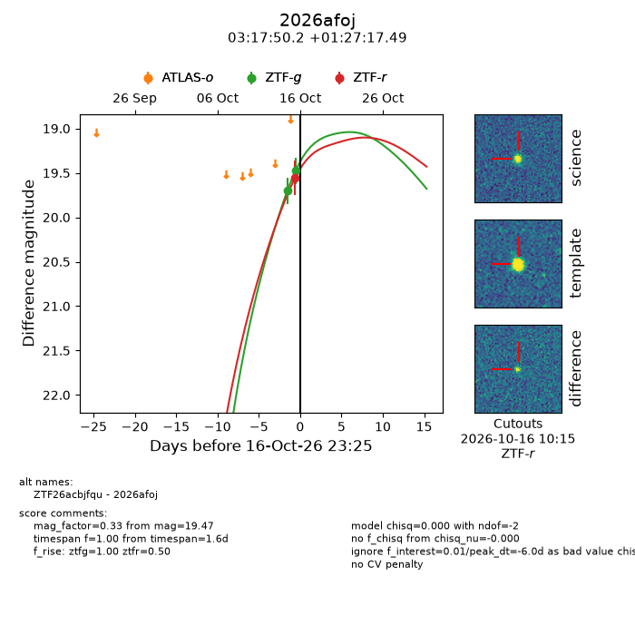
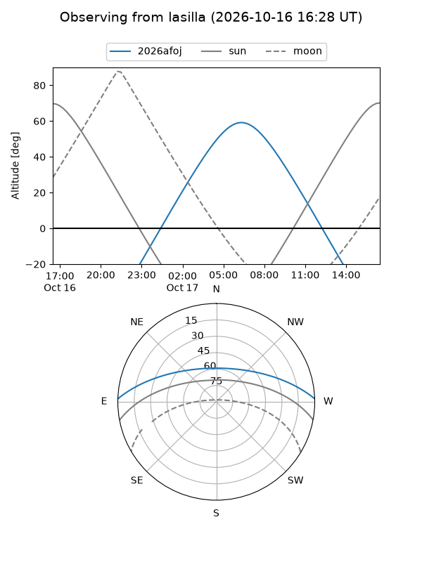
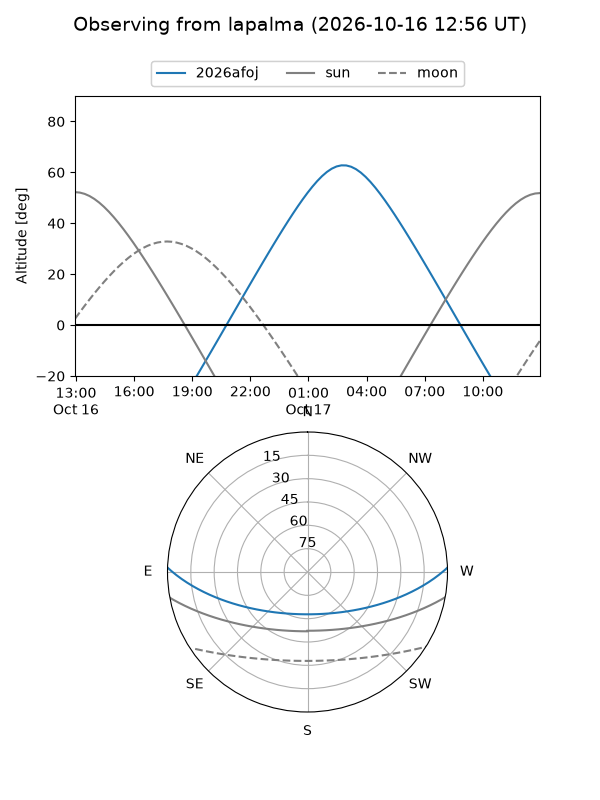
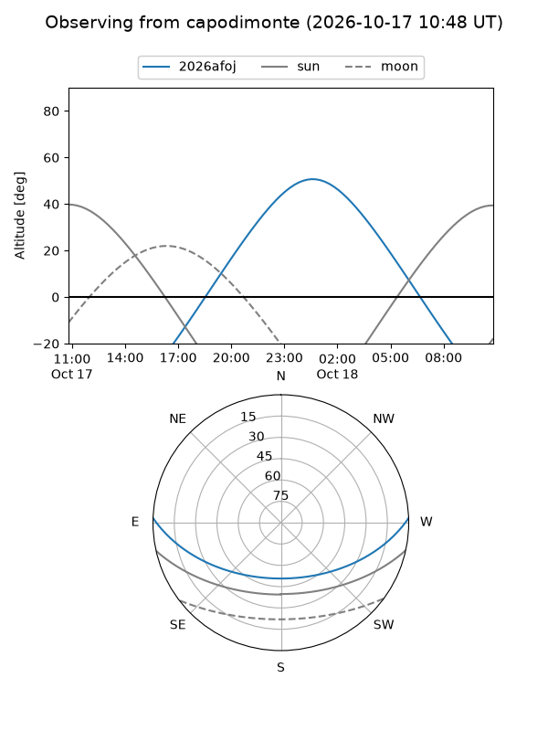
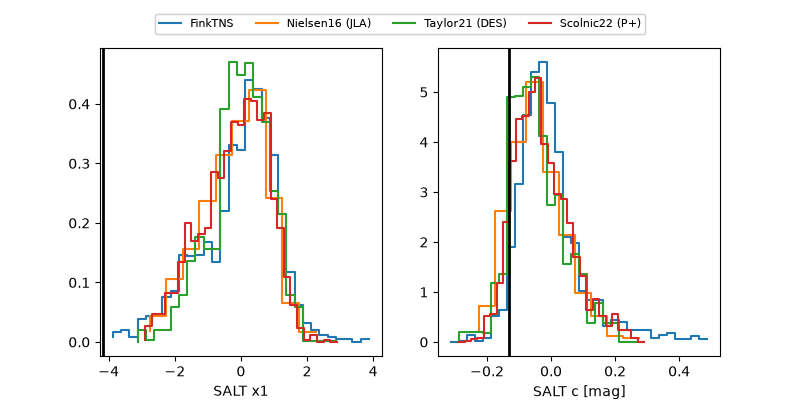

2026afoj
Target 2026afoj at 2026-10-17 11:26
Aliases and brokers:
FINK-ZTF: ztf.fink-portal.org/ZTF26acbjfqu
Lasair-ZTF: lasair-ztf.lsst.ac.uk/objects/ZTF26acbjfqu
ALeRCE-ZTF: alerce.online/object/ZTF26acbjfqu
YSE-PZ: ziggy.ucolick.org/yse/transient_detail/2026afoj
TNS name: wis-tns.org/object/2026afoj
Direct TNS query: direct search
alt names
ZTF26acbjfqu (ztf,fink_ztf)
2026afoj (tns,yse)
Coordinates:
equatorial (ra, dec) = 49.4592,+1.45486
equatorial (HMS+DMS) = 03:17:50.21,+01:27:17.49
galactic (l, b) = (179.8316,-44.64347)
Flags:
peak dt: -5.5
Photometry:
last ztfg=19.47, ztfr=19.55
2 ztfg, 1 ztfr detections
Lightcurve

Visibility



Additional plots
